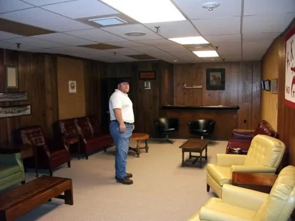
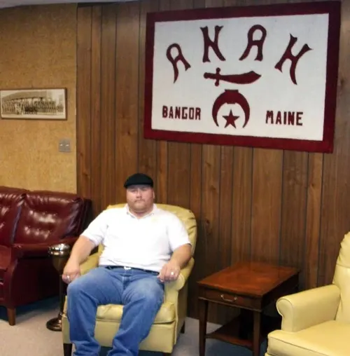

Anah Temple Shrine
c. 2011 (to confirm) · Bangor, Maine

A stop at Anah Temple Mystic Shrine in Bangor, Maine. A Noble there replied, “Glad to have you visit Anah!” and I promised that on my next trip to Maine I’d try to stop in, and bring the lobster.


